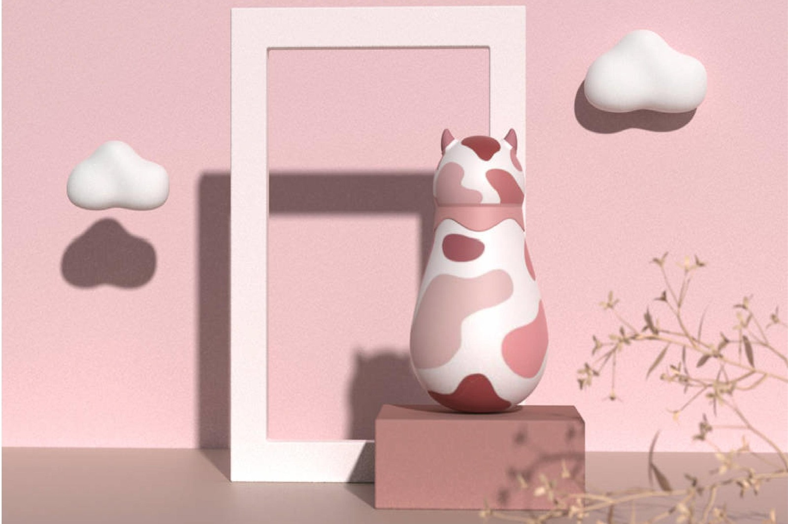

Packaging concept · 2022
Two-in-One Bath Bottle

This children’s bathing product concept combines a body-wash bottle with a soft silicone scrub brush in a playful, cow-inspired form. The design brings dispensing and washing into one object, using rounded shapes and a compact grip to make the routine feel more approachable. The project explores how packaging, ergonomics, and character design can work together in a familiar everyday activity.